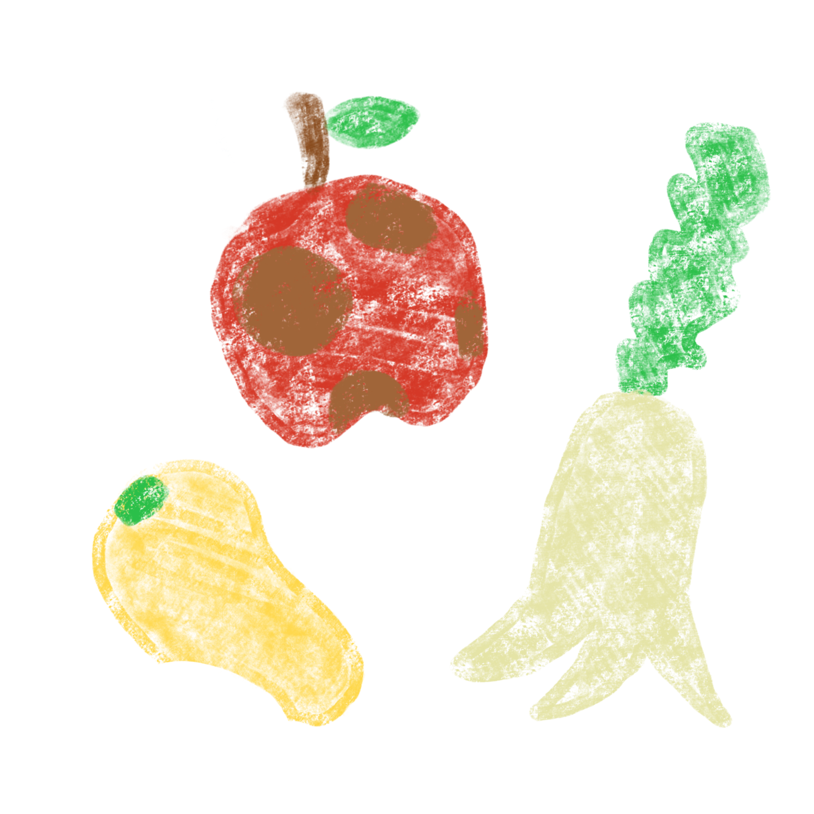
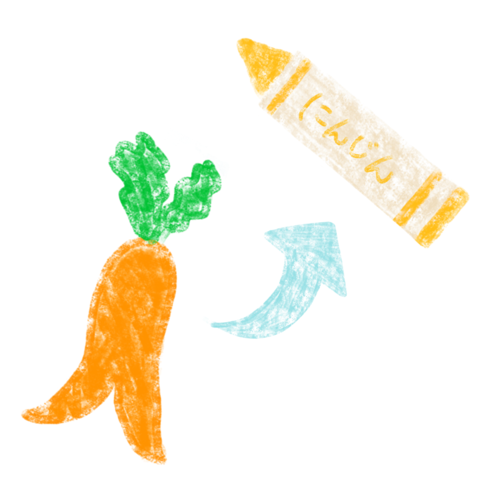

この食べもの、使えるモノ！
食べモノ
いびつな形のにんじん、台風で傷ついてしまったナス、虫にかじられたキャベツ など…
「もう食べられない」「市場で売れない」
そんな野菜を廃棄していませんか？
にんじんからクレヨン、ナスから紙、キャベツから服に！？
その野菜も、農家さんが予想もしないモノに生まれ変わるかもしれません。
大切に育てた野菜への想いを伝えてみませんか。
食べモノの魅力

1. 規格外野菜を有効活用
農家さんが大切に育てた野菜の約20％が規格外野菜として廃棄されているのを知っていますか？
食べモノは、農家さんの想いをより多くの人たちに届ける手助けをします。

2. アップサイクル事業の促進
本来は捨てられるはずの製品を新たな製品として生まれ変わらせる、「アップサイクル」と呼ばれる取り組みがあります。
食べモノは、環境に優しいモノづくりのきっかけを作ります。

3. 「食品ロス」削減に貢献
規格外野菜の廃棄削減は、「食品ロス」の削減につながります。
食べモノは、SDGsの目標12の達成に貢献します。